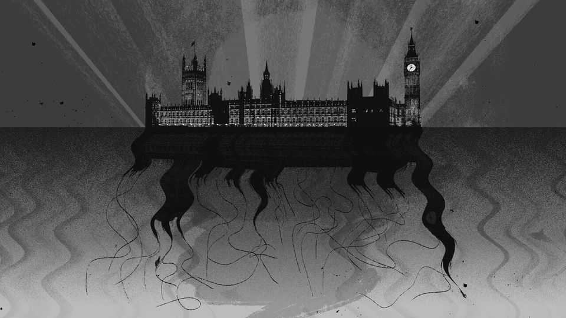

How suicide became a lobbying tool
Public policy is increasingly dictated by tragedy

Oct 15th 2026
Talk of suicide is hard to avoid in Britain. Kemi Badenoch, the Conservative leader, recently warned that inheritance-tax changes mean farmers “are literally committing suicide so that their children don’t have to pay it”. Watch “The Social Reckoning”, a new film about Meta, and an advert will pop up: “Instagram helped kill my daughter”. It is a campaign by the family of Molly Russell, a 14-year-old girl who died by self-harming after she had seen similar things on Instagram (which Meta owns). More than three years after Ruth Perry, a headmistress from Reading, killed herself following a school inspection, teachers still campaign in her name. “I don’t want there to be another Ruth,” said one this summer, calling for the inspection regime to be gutted.
There is, thankfully, no growing epidemic of suicides. British people kill themselves at roughly the same rate as they have for the past few decades. Last year 6,000 people did so in England and Wales. What has shifted is the way Britain’s establishment treats these deaths. Suicide was once a sin. Until 1961 it was a crime; then it was a tragedy. Now, however, suicide is an argument.
Policy is discussed surprisingly often in terms of how likely it is to make someone kill themselves. In the 20th century mps rarely mentioned such things. Now they do so hundreds of times a year. In 2025 suicide featured in parliamentary debates on asylum claims, AI policy, the public finances, football regulation, special-needs provision, seafarers, the “spring statement”, trans rights and the welfare system. There were also entire debates on male suicide, mental health and whether to legalise assisted dying.
What began as healthy acknowledgment of a dark reality has morphed into something troubling. Bereaved families like the Russells started speaking out to prevent similar tragedies in the early 2010s, says Sir Louis Appleby, a professor at the University of Manchester. Soon enough, no mental-health story was complete without a claim about suicide. At this point the sincere began to mix with the cynical. Some genuinely wanted to raise awareness; others wanted to win an argument. The risk, says Sir Louis, is “to already-distressed people who hear the message: ‘People like you, facing similar problems, are taking their own lives’.”
Suicide is too often framed as a logical response to policy by politicians. It took little time for a debate about inheritance tax on farms to focus on the idea of desperate farmers killing themselves. Farmers “may well decide that they should not be here” when the law was introduced, said Tom Bradshaw of the National Farmers’ Union in 2024. Rather than something preventable, suicide is portrayed as inevitable if the government chooses a particular course of action (trampling on guidance from suicide-prevention groups). And it works: Labour duly made its inheritance-tax reforms more generous to farmers the next year.
When suicide is prominent in politics, debate can descend into blackmail. Talk of trade-offs or compromise becomes impossible. Ministers making life harder for benefit claimants had “blood on their hands”, said Labour MPs in the 2010s, citing constituents who had killed themselves. In 2019 Peter Bone, a Tory MP, campaigned on behalf of people who had been caught using a tax-dodging ruse and forced to pay back large sums via a “loan charge”. “How many more people are going to take their lives before the loan charge is scrapped?” asked Mr Bone. As a lobbying technique, it was a success. Britain has a more forgiving welfare system than a decade ago, and its tax authority has weakened demands over the loan charge.
Martyrdom was once a preoccupation of extremists. Now it has infected middle-of-the-road campaign groups. When Perry killed herself there was an immediate outcry, with teachers’ unions calling for inspections to be made less intrusive or scrapped. A neighbouring headteacher declared: “It’s really important to us to remember her and for her death not to be in vain.” A tragic death had to be made to mean something. As far as policy went, it did. Labour cited Perry’s suicide when it unveiled reforms hobbling Ofsted, the school inspector.
Suicide is but one nightmarish problem faced by the state every day. Dead teachers, dead farmers and dead teenagers must be balanced against a million other competing demands. It is a grisly job but a fundamental one for politicians. Increasingly, the British state refuses to admit these trade-offs. Instead, Leviathan wraps its arms around a grieving family in misplaced humanity. Compassion that should come from society instead comes from the state, with pernicious effects on policymaking.
No wonder ministers hide behind coroners when suicide is discussed. An inquest determined that Instagram had played a part in Molly’s death, recommending far tighter rules for children on social media. Labour introduced them. Similarly, Ofsted got a kicking for not doing enough to support Perry. The result is that coroners become de facto lawmakers, with their suggestions—such as watering down inspections or limiting children’s access to the internet—dictating legislation. Parliamentarians end up as little more than secretaries transcribing them onto vellum.
Even the most well-meaning politicians find themselves following a dark strategy, whether cynically or not. Britain is in an emotional state, incapable of resisting grief. Politicians and campaigners use that to their advantage. In their efforts to be compassionate, mps are witlessly embracing a terrible idea: that good can come from suicide. It is a poisonous line of reasoning, which suicide-prevention groups rightly fight in case it leads to more death. There could be no more destructive message to send. Yet it worms its way into almost every policy area. Why has suicide become a political tool? Because it works. ■